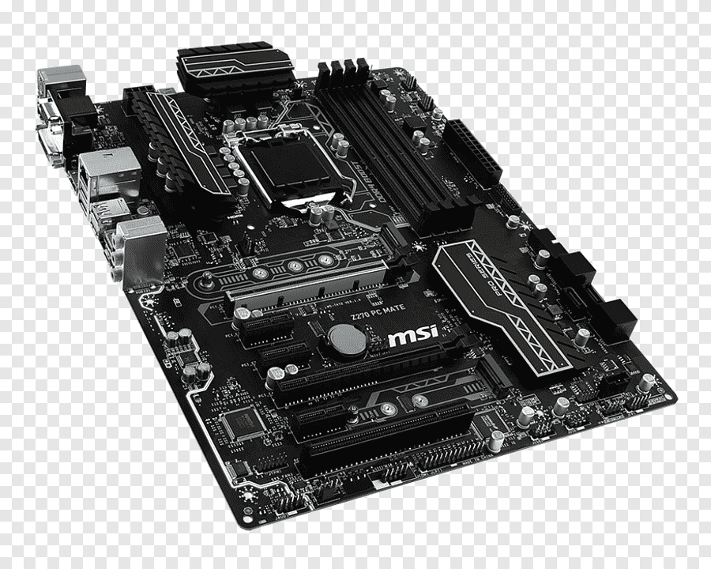

A Base do Computador
A placa-mãe conecta todos os componentes do computador e permite a comunicação entre eles.
| Modelos de Placas-Mãe | ||||
|---|---|---|---|---|
| Modelo | Socket | Memória Suportada | Preço Médio | Categoria |
| ASUS PRIME A320M-K | AM4 | DDR4 até 32GB | R$ 300 - R$ 400 | Básica |
| MSI B550M PRO-VDH | AM4 | DDR4 até 128GB | R$ 700 - R$ 900 | Intermediária |
| Gigabyte Z790 AORUS ELITE | LGA 1700 | DDR5 até 128GB | R$ 1.500 - R$ 2.000 | Avançada |
| ASRock X670E Taichi | AM5 | DDR5 até 128GB | R$ 2.200 - R$ 2.800 | Entusiasta |
| www.guiadehardware2025.com | ||||